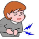

Functional Abdominal Pain
Rx
1.Drop Dimethicone N=1 5gtt q8h
Or Syrup Dicyclomine N=1 q12h
نکات
1 : نشانه های خطر : دردی که کودک را از خواب بیدار کند ، درد پایدار R u/l Q ، استفراغ مکرر ، اسهال دوره ایی و مزمن ، اختلال بلع و سابقه ی بیماری گوارشی
2 : تشخیص در کودکان 4 تا 18 ساله که مبتلا به در مزمن شکم بدون علایم و نشانه های خطر و معاینه فیزیکی نرمال و تست OB منفی
3 : شروع درمان علامتی و اطمینان دادن و آموزش به کودک و خانواده است
تصویری برای این نسخه موجود نیست.